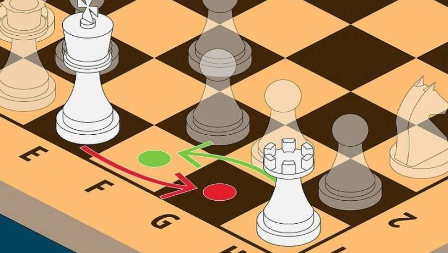
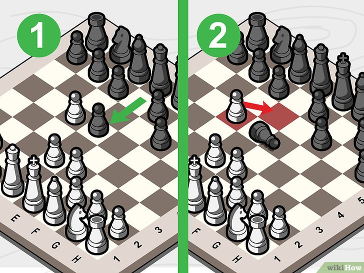
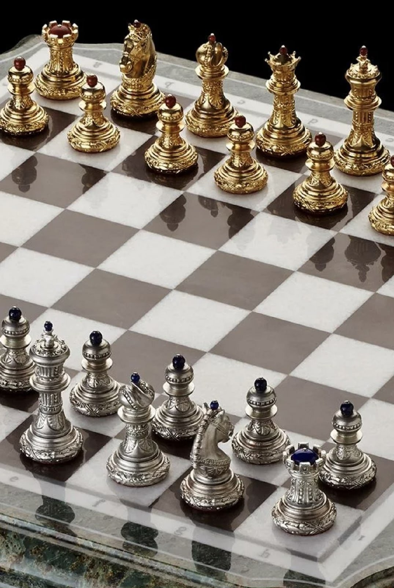
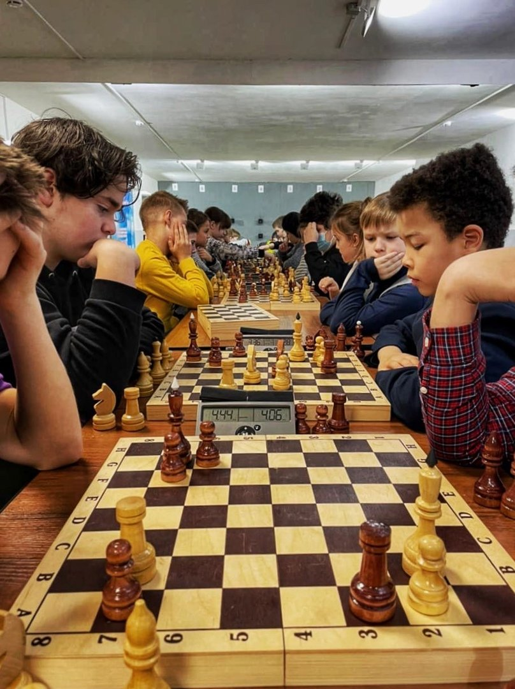

Взятие фигур. Правила рокировки
Правила рокировки
Один раз в течение партии каждый противник имеет право сделать двойной ход — рокировку, при которой король переставляется на два поля по направлению к ладье, а ладья переходит через короля и становится на соседнее с ним поле. Перестановка короля на два поля влечет за собой обязательную перестановку ладьи.

Пример рокировки
42
, 43
и 44
показаны исходные (до рокировки) и конечные
позиции рокировок в короткую
и длинную стороны (после рокировок).
Рокировка в сторону королевской ладьи называется короткой и
обозначается 0-0, в сторону ферзевой ладьи — длинной и обозначается 0-0-0.
Рокировка невозможна в следующих случаях: — если король или ладья уже раньше ходили
Добавим к этому, что если один из
противников во время рокировки на-
рушил какое-либо из указанных пра-
вил, он обязан поставить короля и ла-
дью на место и сделать ход королем.
Тут действует правило: «тронуто-схо-
жено», то есть, если невозможна ро-
кировка, ходит король.
Рассмотрим позиции диаграмм 45, 46, 47, где по разным причинам невозможно сделать рокировку. На диаграмме 45 белый король на e1 находится под шахом черной ладьи, стоящей на е8 — рокировка невозможна. Однако, защитившись от шаха ходом Ng3-e2, следующим ходом белые смогут рокировать в короткую или длинную сторону, если, конечно, черные своим очередным ходом Лa8-d8 не воспрепятствуют длинной рокировке (белый король не может перейти через атакованное черной ладьей поле d1). На диаграмме 46 белый король может рокироваться только в короткую сторону. Рокировка в длинную сторону для него невозможна, так как иначе он попал бы под шах черного. слона g5 (поле c1 атаковано черным слоном g5).
И, наконец, на диаграмме 47 представлен случай, когда на пути рокировки — то есть между королем и ладьей — стоят чужие фигуры. Белый король не может рокироваться в короткую сторону, так как на поле fl находится черный слон. При этом он беспрепятственно может сделать длинную рокировку. Черный король не имеет права рокироваться в длин-ную сторону, так как поле d8 занято белым конем. В то же время он имеет возможность осуществить короткую рокировку. Начинающему полезно запомнить, что рокировку необходимо осуществлять, как правило, в начале партии: это позволяет обезопасить своего короля, а также ввести в игру такую сильную фигуру, как ладья. И, наоборот, стараться создавать препятствия для рокировки короля соперника. Это позволяет подчас быстрее организовать атаку на него.
Взятие фигур
Во время игры соперники берут (бьют) друг у друга фигуры или пешки. Операция взятия
на
шахматной доске выполняется следующим образом: снимают фигуру или пешку с поля и на
это поле
ставят свою фигуру (или пешку).
Особенности операции взятия:
Все фигуры бьют по тем же правилам, что и ходят. Исключение составляют пешки: они
ходят
прямо, а бьют по диагонали.

Также у пешек есть особенность — взятие на проходе: если пешка, сделав ход на два поля из начального положения, становится рядом с неприятельской, та может её сразу взять. Взятие на проходе выглядит так: если белая пешка с поля f2 пойдет на два поля вперед (f2-f4), черные могут её взять на проходе ходом g4 , и черная пешка окажется на поле f3. Аналогично, если черные сыграют e7-e5, белые могут взять её на проходе ходом d5 , и белая пешка окажется на поле e6. Важно: если право взятия на проходе не используется сразу, оно теряется.

В шахматах бить не обязательно. Все фигуры одного цвета защищают друг друга по тем же правилам, что и бьют фигуры противника. Поэтому перед взятием фигуры надо обдумать, какими фигурами она защищена и насколько выгоден такой размен. Король может бить только незащищенные фигуры противника, что логически следует из цели игры. Глаголы, обозначающие взятие фигур: взять, бить, "съесть", брать — равнозначны. Можно сказать: "Слон взял пешку", "Слон побил пешку", "Слон съел пешку".
Практические примеры взятия фигур показаны на диаграмме. Сначала рассмотрим взятие белыми фигурами черных фигур. Белый ферзь на d2 может
взять черную ладью на a2 или черного слона на g5. Белая ладья на c4 может бить черную ладью на c7, черного слона на e4 или черную пешку на a4. Белый слон на e8 может съесть черную пешку на a4. Белый конь на d6 может взять черного слона на e4. Другой белый конь на f5 может съесть черного коня на g3. Белый король на g1 не может взять черного коня на f1, так как он защищен другим черным конем на g3 (см. третье правило взятия).
Теперь рассмотрим взятие черными фигурами белых фигур. Черный король на a7 может взять белую ладью на b6, так как она не защищена. Черный ферзь на g8 может съесть белую ладью на c4 или белого слона на e8. Черная ладья на a2 может взять белого ферзя на d2, другая черная ладья на c7 — белую ладью на c4. Белопольный черный слон на e4 может взять белого коня на f5, а чернопольный черный слон — бить белого ферзя на d2. Черный конь на g3 может взять белого коня на f5, а его коллега на f1 — съесть белого ферзя на d2.
На диаграмме33
показаны примеры
взятия пешками. Белая пешка на a4 может съесть черную пешку на
b5.
Важно запомнить, что за один ход белые или черные могут взять только одну фигуру или
одну пешку соперника. Правило "тронул-ходи" действует и при взятии фигур: если игрок
дотронулся до фигуры соперника, которую может взять, он обязан её бить. Поэтому, прежде
чем ходить или взять фигуру противника, нужно хорошо продумать ход и только потом
совершать действие. Если нужно поправить фигуру соперника, следует заранее произнести:
"Поправляю".
Кроме того, взятие фигур и пешек является важной частью стратегии в шахматах. Каждое
взятие должно быть тщательно взвешено с точки зрения общего плана игры и позиции на
доске. Нередко выгоднее не брать фигуру, если это открывает линию атаки противнику или
ослабляет собственную позицию. Поэтому, важно анализировать последствия каждого взятия и

стремиться к улучшению своей позиции, сохраняя при этом баланс между атакой и защитой. Шахматы — это игра не только силы, но и тактики, и каждое взятие должно служить достижению конечной цели — победе.